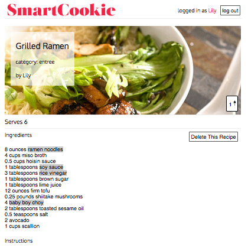
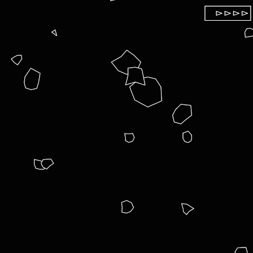
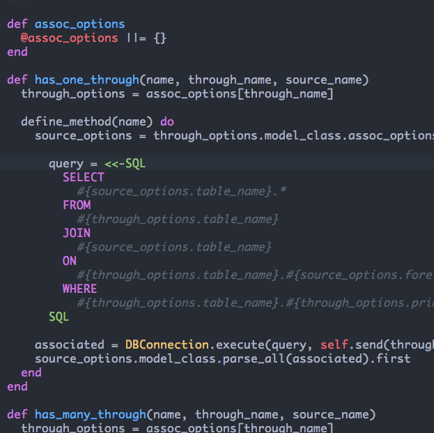
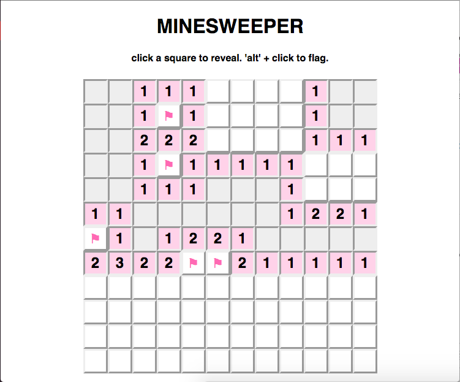

A LITTLE ABOUT ME
As a left-brain/right-brain hybrid (think mathlete/theatre kid), I never thought I'd find a field that challenged me technically and creatively. I grew up dreading the day when I'd need to give up one of my passions.
Luckily, I discovered programming, and immediately fell in love with its perfect balance of rigorous, logical thinking and creative problem-solving.
I currently teach Full-Stack Web Development at App Academy, and blog about my experiences teaching here.
When I'm not teaching or coding, I can usually be found directing plays, consuming dangerous quantities of iced coffee (no matter the season), or adventuring around my beautiful hometown, NYC.
MY FAVORITE TOOLS
SOME THINGS I'VE MADE
-
SmartCookie (Rails, Backbone.js, jQuery)
Check it out! Collaborative recipe development platform with annotations inspired by Genius.
Backbone front end consumes a RESTful JSON API served up by Rails.
Gets start and end indices for annotations by reading DOM's selection object.
Supports nested and overlapping annotations. -
Asteroids (Javascript, HTML5 Canvas, jQuery)
Check it out! Everyone's favorite arcade classic, coded for the browser.
Randomly generates irregular polygonal asteroid geometry.
Uses trigonometry and transformational geometry to approximate physics and render objects.
Implements the Separating Axis Theorem to accurately detect collisions between irregular polygons. -
ActiveRecord Lite (Ruby)
Check it out! Ruby ORM recreating the funtionality of Rails' ActiveRecord
Generates SQL queries based on naming conventions to replicate Rails associations.
Utilizes advanced Ruby language features, such as meta-programming and reflection. -
Minesweeper (React.js, Javascript)
Check it out! Why did this game seem so hard when I was a child???
React.js component heirarchy efficiently renders changing game state.
Evokes nostalgia by replicating those clicky tiles we all knew and loved in the 90s.